The play area is 42 character squares high, but only the middle 38
(y-coordinates 2-39) are ever displayed. Which means that the top two rows
(y-coordinates 0 and 1) of the play area are always hidden - even though the
graphic data for them exists and is not garbage.
However, the top two rows of the play area are not very interesting; for the
most part they are the same as the third and fourth rows. The only exception is
the area above the Hotel Royale. Normally that area looks like this:
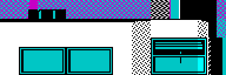
But if you could see all the way up to the top row (y=0), it would look like
this:
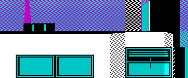
Hidden ground
As noted in the item above, the play area is 42 character squares high, but
only the middle 38 (y-coordinates 2-39) are ever displayed. Which means that
the bottom two rows (y-coordinates 40 and 41) of the play area are always
hidden - even though the graphic data for them exists and is not garbage.
However, the bottom two rows of the play area are not very interesting; the
very bottom row (y=41) is completely blank, and the next row up (y=40) is
mostly blank, except for some extra minor detail at the bottom of the
staircases leading up into the apartment buildings next to no. 74 and
no. 19. Normally those areas looks like this:
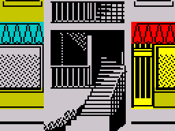
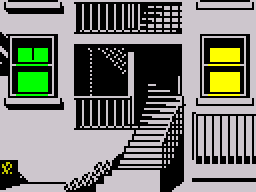
But if you could see all the way down to the bottom row (y=41), they would look
like this:
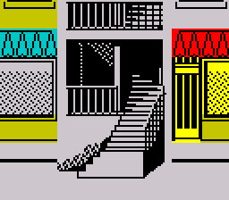
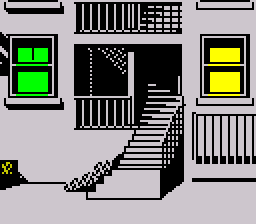
$46 or bust
Sam must have at least $46 when he's arrested, otherwise the game will end
immediately (see 31642). When Sam is released from jail, the bail amount is
set low enough that Sam can pay it (see 31594).
Cash chances
The banknotes flying through the city streets are denominated in $1, $5, $10
and $20 amounts. However, they are not distributed evenly across those
amounts. The probabilities of obtaining a banknote of a particular value are as
follows (see 25039):
$1 - 1 in 2 (0.5)
$5 - 41 in 128 (0.32)
$10 - 19 in 128 (0.15)
$20 - 1 in 32 (0.03)
The policeman always knocks twice (or more)
When a policeman knocks on a door, he knocks continuously until someone answers
(or the door is busted open); other characters knock once and wait for a while
before knocking again (see 62325).
The edge of town
Although Sam cannot get to the location at coordinates (254,34) (at the far
right edge of the play area, outside no. 15) by approaching it directly on the
sidewalk, he can get there by going to (252,34) first, going up a step to
(253,33), and then going down a step.
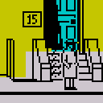
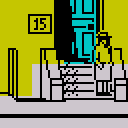
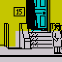
(252,34)
(253,33)
(254,34)
Talk is expensive
Whenever Sam picks up a telephone that is not ringing, he is charged $2 - even
before he starts dialling (see 30458).
Telephonic distribution
No. 27 is the only building that does not contain a telephone; the building
with the most telephones is no. 74, which has four (if you count the room past
the catwalk as part of no. 74). See the play area objects
page for the location of every telephone in the city.
POKE 62803,34 places a telephone on the third floor of no. 27; the
phone will have no number itself but can be used to make outgoing calls.
Lana rings in a hurry
The phone message entry at 27506 (DAISY SAID 'LANA RANG - SHE HAD TO GET OUT
IN A HURRY - OH AND I HEARD NOISES IN THE CEILING') is activated before a new
game starts. This means that Sam can phone Daisy before going to the top floor
of the hotel (where the man's body is on the floor) and still get the message.
Gangsters who get a move on
The gangster who hangs around at no. 15 in game mode 1 (waiting for Sam to
enter without a key) and the gangster who watches for Sam outside the police
station in game modes 2 and 3 are different in one significant respect from the
other gangsters in the game: after the gangster has dropped Sam off the roof of
no. 19, he is immediately teleported back to his base location (see 24925),
thus foiling any plans Sam might have to sneak past the police station or into
no. 15 while the gangster is on his return journey.
Dark room
The right-hand jail cell in the police station is unique among all the rooms in
the play area in that it is always dark and has no light switch. To add a light
switch to the room:
There is no key to no. 19 to be found anywhere in the game, but setting bit 7
at 32746 gives Sam access to that house without knocking.
'M' for messages
The 'M' key toggles the speed at which messages are displayed on the screen,
but according to the original instructions, the 'I' key is supposed to do
that. 'POKE 49993,27' would make 'I' do the same as 'M'.
First aid shortage
The game instructions state that Sam has ten first aid kits to start with, but
in fact he has only eight.
The garbage hypothesis
The section of code at 25562 checks whether the object that Sam has landed on
after completing a somersault looks like a banknote. This check is redundant -
there is no other kind of object that Sam could land on - but was it always so?
Perhaps at some stage during the development of the game, non-banknote objects
may have been seen blowing along the streets. And perhaps those non-banknote
objects were bits of garbage. There is, after all, a line in the game
instructions that says "A gust of wind disturbs the garbage on the sidewalk".
Lana's legs
To save memory, phases 1 and 3 of each character's walking animation are
identical; for example, here are Daisy's walking animation phases:
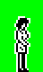
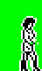
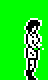
1
2
3
4
Lana, however, goes one step further than all the other characters in her
memory-saving effort by having phases 2 and 4 of her walking animation
identical too:
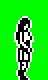
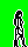
1
2
3
4
Return to BASIC?
The unused routine at 61618 is found in the table of keypress handling
routines at 60672, but is not bound to any key - so what does it do? Perhaps
during development it was bound to some key, and was used to quit the
game and return to BASIC. Note also the unused routine at 61612, which sets
the operand of the 'LD SP' instruction in the routine at 61618, sets up
the bottom 4 lines of the screen, and then starts the game in demo mode; could
it be the tail end of a routine that was used during development to start the
game for testing?
Silent hangup
Pressing 'H' while Sam is on the phone makes him hang up. No message is
displayed to confirm that event, but the unused message at 27113 (I HUNG UP)
indicates that there probably used to be. That unused message is used by the
unused routine at 31284, which queues the message urgently and plays a sound
effect. Perhaps this feature was removed before the game was released because
pressing 'H' while reading a phone message would make the message fly by too
quickly, making it difficult to take in.
Don't call Daisy - she'll call you
The only phone message from Daisy that Sam doesn't have to call the office to
receive is message 63: 'DAISY SAID 'SAM - A GANGSTER'S WATCHING FOR
YOU OUTSIDE THE POLICE STATION''. It is the first message received on the phone
on the third floor of no. 15 after Sam has entered that house using the
key. Exactly how Daisy knows where Sam is at that time remains a mystery,
however.
Glutton for punishment
The gangster who watches for Sam outside the police station can be repeatedly
knocked out at will. First, tease the gangster by approaching him from the left
and then running away - he will run to the left edge of the police station and
then freeze:
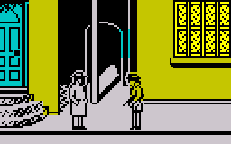
Now enter no. 31 (POKE 32746,16 gives Sam the key to that house), go
up to the roof, and walk off the edge - Sam will land on the gangster's head
and knock him out. Move a few steps to the left, wait for the gangster to
recover and return to the knockout location, and do it all over again.
Note that because of a bug in the routine that controls a character
who's been knocked over, the gangster may, after recovering, freeze in a
location that is to the left of the knockout location. In that case, Sam won't
land on his head by jumping off the roof of no. 31. However, after Sam has
landed on the sidewalk (and recovered from the fall), the gangster will remain
frozen, completely unaware of Sam a few steps behind him.
Snipers and keys
The probability that a sniper will appear at any moment depends partly on how
many keys Sam has collected - the more keys, the more likely it is that a
sniper will rear his head and start shooting (see 25307).
Bullet speed
As Sam gets more money, the snipers' bullets fly faster through the air (see
26075).
The bullets are slowest when Sam has less than $256; they are bit faster when
Sam has between $256 and $511; they are a bit faster still when Sam has between
$512 and $767; and they are fastest when Sam has between $768 and $1023 (twice
as fast as when Sam has less than $256, in fact).
The good news is that should Sam be lucky enough to get past the $1023 barrier
- a difficult task given that the sum total of the cash available in the game,
not including banknotes, is only $950 ($550 in bonuses plus $100 for each of
the four keys) - the bullets return to their slowest speed.
Stun settings
Exactly where Sam hits a character by falling onto his head determines how long
that character will stay down and stagger afterwards before recovering. If
Sam's x-coordinate matches the character's x-coordinate at the time of
collision, the stricken character will stay down for twice as long and
subsequently stagger around for twice as long as when the x-coordinates differ
by 1 (see 64162 and 64005).
Deck me if you can
The routine at 64162 checks whether anyone (including Sam) has been struck by
a falling character, but because it simply places the address of the
uninterruptible subcommand routine at 64005 or 64009 into bytes 18 and
19 of the stricken character's buffer, this has no effect on Sam; thus Sam is
the only character who cannot be knocked over by another character landing on
his head.
Note that the only occasion on which a character other than Sam will step off
the roof of a building (and therefore possibly strike another character) is
when that character is chasing Sam, and Sam has just stepped off the right edge
of the roof of the apartment building next to no. 19 onto the roof of no. 19:
the chasing character will jump down onto the roof of no. 19 too.
Gangsters and disguises
The gangsters at no. 19 will allow Sam to enter their house and roam freely
inside if he uses disguise no. 7 (the oil man):
This disguise enables Sam to pick up the ringing phone on the top floor of
no. 19; if he answers it as ED (press 'E' when asked who's there), a voice says
'OK ED - THE FAT MAN HAS THE KEY TO NO 27'. The disguise doesn't fool the
gangsters for ever, though: after Sam has crossed the roof of no. 19 using the
hook (and someone below says 'CRUISE WAS DRESSED AS THE OIL MAN. DONT LET
ANYONE PAST'), the disguise becomes useless (see 64836).
Unfortunately, none of the other gangsters are ever fooled by any of Sam's
disguises.
Policemen and disguises
If Sam is being chased by the police, the best strategy for making a getaway is
to wait until the chasing policeman is almost close enough to arrest him, and
then quickly don a disguise that is not yet known to the police. This will give
Sam a chance to scoot past the officer without being picked up, which is useful
if you're just not quite ready to go to jail yet.
However, as soon as Sam has been seen in disguise by either policeman, it is
only a matter of time before that disguise becomes known to both officers, and
Sam will be on the run again. Also note that it's a bad idea to hang around
after changing disguise: when a disguise becomes known to the police, any
policeman who has already seen Sam in that disguise will return to where he
first saw him (see 29559).
Daisy's diversion
Contrary to popular belief - and perhaps her employment contract as well -
Daisy doesn't spend all her time pacing up and down in Sam's office waiting for
telephone calls. In fact, every so often she leaves the office and wanders over
to the right-hand green room on the top floor of the apartment building next to
no. 19 (see 65076). What possible business could she have there? Even worse,
during demo mode, Daisy walks up and down on the roof of the apartment building
next to no. 19 for ever (see 57888). Strange behaviour for a secretary, to be
sure.
Ordinary special locations
The location descriptors that invoke the special location handler routine whose
address is at 40982 are redundant, because the special location handler
routine itself (at 60423) actually does nothing special.
But could these ordinary special locations have been used, at some time during
the development of the game, to trigger a special location handler routine that
actually did something interesting? One thing that the locations have in common
(except perhaps for the ones at no. 74) is that they each mark the entrance to
a room: an apartment, the room past the catwalk, Sam's office (for
example). Maybe these locations triggered a handler routine that made the
character switch on the lights before entering the room? That is one
possibility, but we may never know for sure.
A cat's tale
The two cats in the game use a simple two-phase animation sequence (animatory
states 118 and 117) in which the tail is always pointing upwards at an
angle:
But sprite tiles 215 and 216 (which are unused) also look like the body and
tail of a cat - this time with the tail pointing horizontally - and may once
have been used as an alternative second phase (or additional phase) of
animation for that creature:
The graphic data contains unused sprites (animatory states
64-68/192-196) of a skinny man wearing a hat:
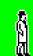
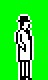
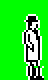
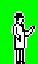
To bring Skinny Man into the game, use one of the following POKEs (which must
be made before the game starts):
POKE 65312,64 (makes Skinny Man walk up and down in the shops below
no. 15 and no. 17)
POKE 65282,192 (makes Skinny Man walk between the sidewalk outside the
first-floor window of no. 19 and the third floor of no. 15)
Lurking Lana
In game mode 3 (after Sam has had the phone call about the key to no. 74 and
gone to the top of the apartment building at the far left of town), Lana hides
on the far left of the first floor of the apartment building next to no. 19
(see 57650) until Sam phones her while in possession of the budgie. To see
her emerge, call her (on 7162) using the phone in that location.